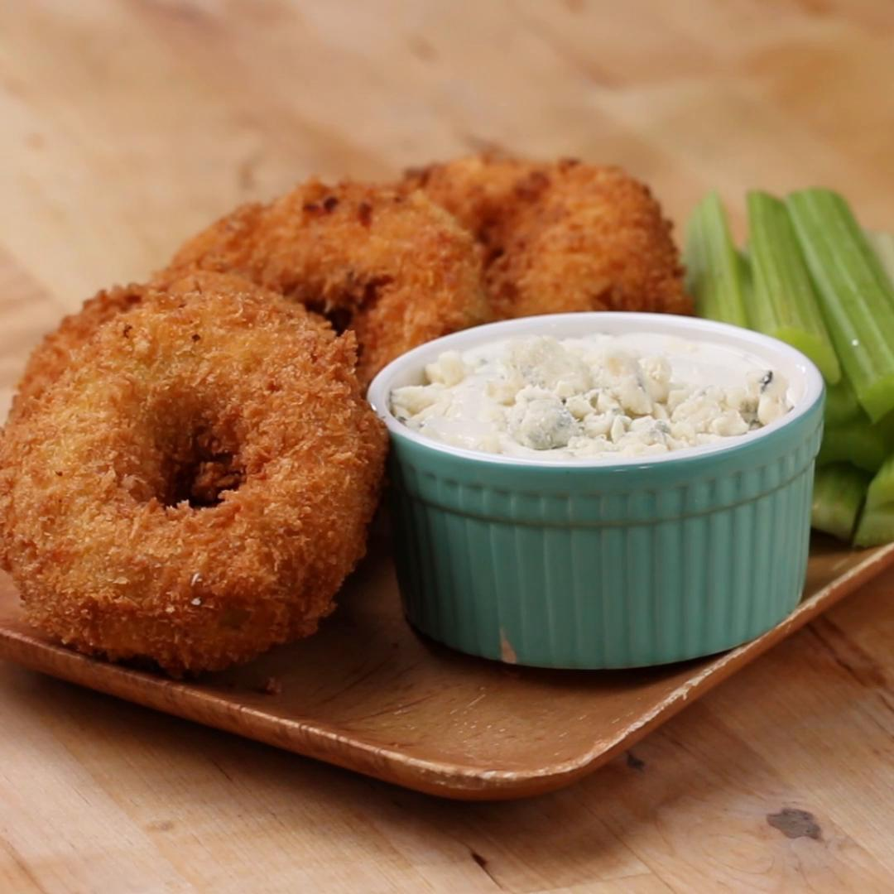

Buffalo Chicken Onion Rings

Description:
This recipe shall help you make delicious
buffalo chicken onion rings at home
Ingredients:
- 8 oz Cream Cheese (225g), softened
- ½ cup Buffalo Sauce (125g)
- 4 cups Chicken (500g), shredded
- 2 cups Shredded Cheddar Cheese (200g)
- 1 oz dry Ranch Dressing mix (30g)
- 3 Large Onions
- 2 cups All-Purpose Flour
- 3 Eggs, Beaten
- 3 cups Panko Breadcrumbs
- Oil
Steps:
- In a bowl, combine the cream cheese, buffalo sauce, chicken, cheddar, and ranch. Mix with a fork until smooth and evenly mixed.
- Cut each end of the onion, peel of the papery onion skin, and cut the onion on its side into large rings.
- Separate the large slices into its separate layers.
- Put the rings on a parchment paper-lined sheet tray. Take the chicken mixture and press a small amount against the inside of the onion creating a ring shape of the mixture with a hole in the middle.
- Freeze until solid. Usually 3-4 hours.
- Heat a pot of oil to 375˚F (190˚C).
- Set up a breading station by placing flour, beaten eggs, and panko bread crumbs into separate bowls.
- Working quickly, bread each frozen ring by coating in flour, then dredge in egg and lastly in bread crumbs. Transfer to a baking dish.
- Carefully lower two coated rings into the oil and fry for about 3 minutes or until golden brown. Continue this until all of the rings are fried.
- Serve warm with blue cheese, ranch, or more buffalo sauce.
- Enjoy!